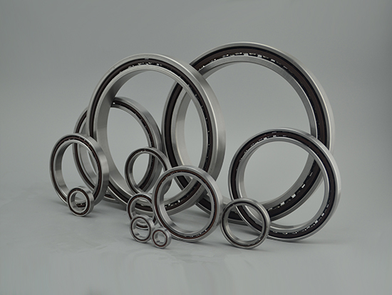

Ultra-high-speed Angular Contact Ball Bearings
Ultra-high-speed, high-rigidity angular contact ball bearings for oil-air or jet lubrication, widely used in aerospace, machine tools, textile, automotive, railway, metallurgy, chemical and electronics industries.
- Size series: H719C, H719AC, H70C, H70AC
- Bore range: H719 8–220 mm, H70 8–220 mm
- Features: ultra-high speed, high rigidity, oil-air or jet lubrication